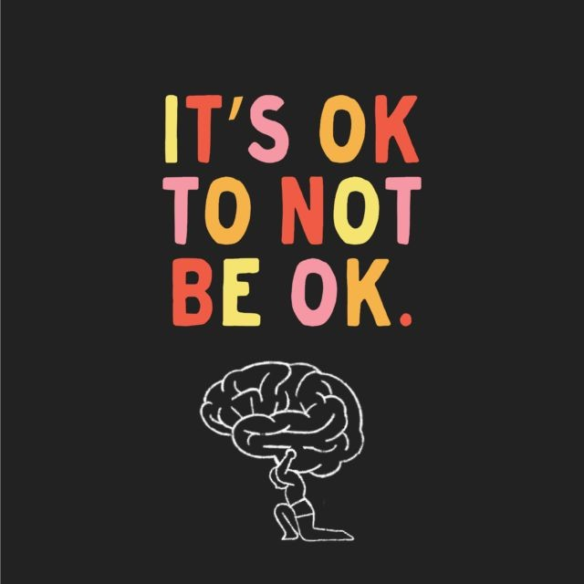

We all have mental health which is made up of our beliefs, thoughts, feelings and behaviours.
We can all suffer from mental health challenges, but developing our wellbeing, resilience,
and seeking help early can help prevent challenges becoming serious.
It is often more realistic and helpful to find out what helps with the issues you face. Talking, counselling, medication, friendships, exercise, good sleep and nutrition, and meaningful occupation can all help.

Challenges or problems with your mental health can arise from psychological,
biological,
and social, issues, as well as life events.